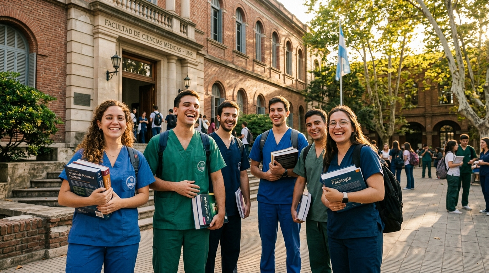
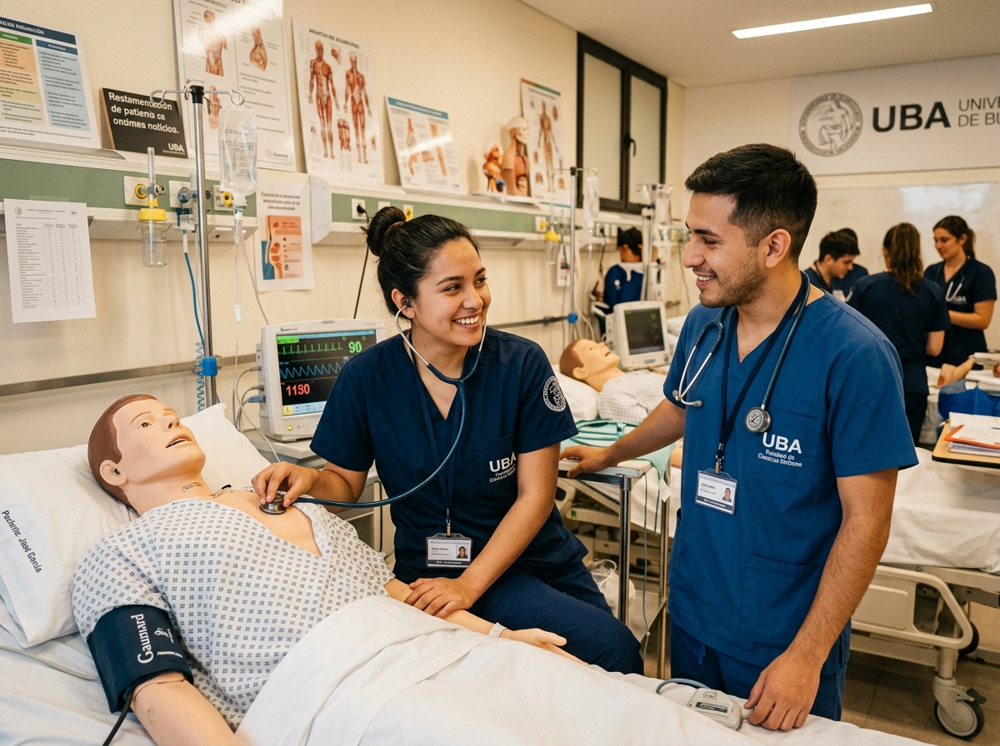
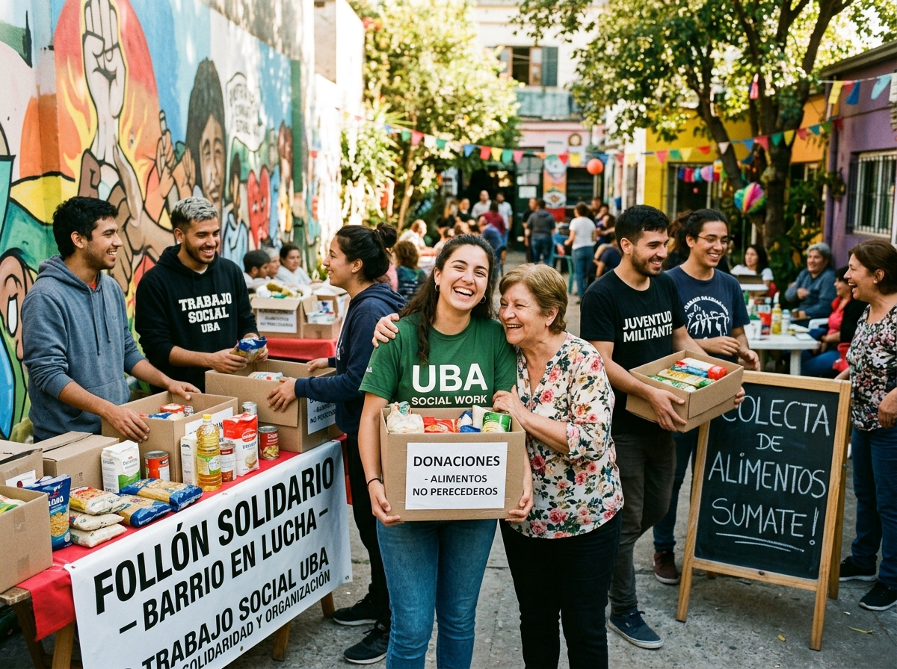
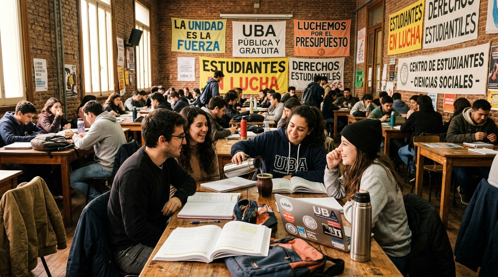
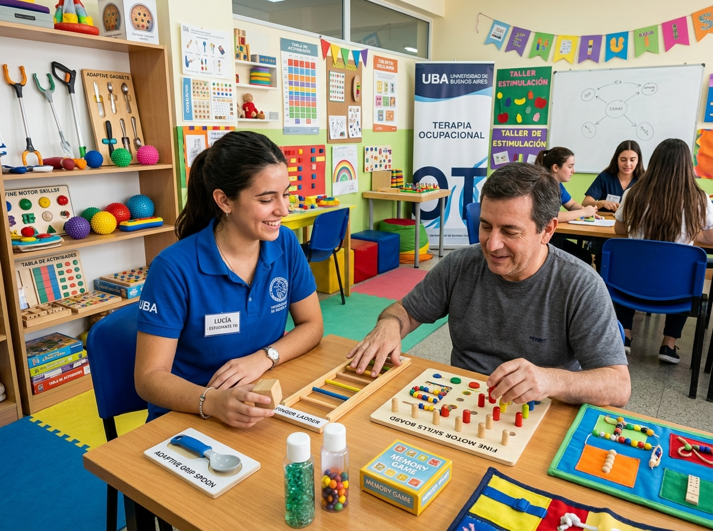

Google Drive
Horarios y Comisiones 2do Cuatrimestre
Cronogramas oficiales de clases, aulas, docentes a cargo y distribución de comisiones para todas las materias de las 3 carreras de la FCSyTS.
Somos El Quilombo, conducción del Centro de Estudiantes de la Facultad de Ciencias de la Salud y Trabajo Social (CECSyTS). Acompañamos tu trayectoria en Enfermería, Trabajo Social y Terapia Ocupacional, defendiendo siempre la Universidad Pública, Gratuita y de Calidad.
Comunidad activa en redes y comisiones
Enfermería, Trabajo Social y Terapia Ocupacional
Defensa gremial y compromiso territorial



Espacio Abierto y Participativo
¡Sumate a las asambleas y comisiones!El Centro de Estudiantes es la herramienta gremial de todos los estudiantes de la FCSyTS. Desde El Quilombo representamos tu voz en los órganos de co-gobierno, garantizamos tus derechos y construimos la permanencia día a día.
Luchamos firmemente por un presupuesto universitario digno, mejores condiciones edilicias, salarios para nuestros docentes y una educación superior laica, gratuita y con excelencia académica.
Consejo Directivo & AsambleasNadie se queda afuera de la universidad. Gestionamos el Boleto Educativo Gratuito, becas provinciales y nacionales (Progresar, Belgrano), materiales a precios populares y apoyo para ingresantes.
Inclusión & DerechosImpulsamos instancias de formación extracurricular constante: talleres de venopunción, sondaje vesical, RCP, herramientas metodológicas de intervención social y abordaje comunitario.
Formación ContinuaLlevamos adelante nuestro Centro Cultural y Café (@elquilombo.ccycafe) con buffet accesible, meriendas compartidas, ollas populares solidarias y la revista de estudiantes emprendedores.
Buffet & Cultura EstudiantilCreemos en una universidad con los pies en el barro y la mirada en las necesidades de nuestro pueblo. Enfermería, Trabajo Social y Terapia Ocupacional no son carreras aisladas; son disciplinas que cuidan la vida, construyen justicia social y transforman realidades.

Información clave, grupos de WhatsApp de cursada, programas, comisiones y espacios de formación específica para cada licenciatura.
Formación científica, humana y ética para el cuidado integral de la salud de personas, familias y comunidades en los tres niveles de atención. Desde El Quilombo impulsamos talleres prácticos de simulación, venopunción, sondaje y bioseguridad para reforzar la práctica clínica.
Profesión comprometida con los Derechos Humanos, la justicia distributiva y la transformación comunitaria. Analiza e interviene críticamente en las problemáticas sociales contemporáneas desde políticas públicas e instituciones territoriales.

Disciplina orientada a promover la salud y el bienestar a través de la ocupación humana. Posibilita la autonomía, inclusión social y desarrollo de habilidades en personas en diversas etapas del ciclo vital a través de adaptaciones y rehabilitación integral.
Encontrá carpetas de Drive compartidas, horarios de comisiones actualizados, formularios de reclamo, guías de ingreso y trámites institucionales con un solo clic.
Cronogramas oficiales de clases, aulas, docentes a cargo y distribución de comisiones para todas las materias de las 3 carreras de la FCSyTS.
Acceso indispensable para inscripción a cursadas, mesas de exámenes finales, consulta de historia académica y certificados de alumno regular.
Aulas virtuales de tus materias, entrega de trabajos prácticos, foros con docentes, bibliografía digital y avisos de cátedra oficiales.
Todo lo que necesitás saber para tu inicio universitario: requisitos de inscripción, legalización de título secundario, correlatividades y calendario.
Formulario oficial de la facultad para pedir excepción por incompatibilidad laboral, cuidado de familiares a cargo o superposición horaria.
¿Tenés inconvenientes con la carga de viajes en la SUBE para venir a la facultad? Completá nuestro relevamiento para elevar el reclamo colectivo.
Defendemos la universidad pública frente a los recortes. Sumá tu firma en apoyo a los reclamos presupuestarios, salariales y de infraestructura.
Catálogo colaborativo impulsado por el Centro de Estudiantes para difundir y apoyar los proyectos productivos de nuestros compañeros de cursada.
Recibí al instante alertas de fechas de inscripción, llamados a mesas de finales, becas, talleres de prácticas y convocatorias a asambleas.
Calculá tu promedio universitario en segundos y redactá tu consulta o reclamo académico con envío directo a nuestro canal de atención.
Calculá tu promedio histórico con y sin aplazos para becas y egreso
Escribinos tu duda y armá un mensaje directo para WhatsApp
Más allá del aula: construimos espacios de encuentro, solidaridad alimentaria, cultura y autogestión para toda la comunidad de la FCSyTS.
Nuestro espacio autogestionado con buffet a precios populares, meriendas accesibles, agua caliente, microondas, enchufes para estudiar y mateada libre entre clases.
Seguir en InstagramIniciativa colectiva nacida para garantizar un plato de comida caliente y viandas a compañeros/as y vecinos en situaciones de vulnerabilidad, demostrando que la solidaridad no se negocia.
Sumarse al Grupo de WPPOrganizamos contingentes estudiantiles a congresos nacionales e interuniversitarios como FAUATS, promoviendo el debate disciplinar, la investigación y la hermandad con facultades de todo el país.
Ver ConvocatoriasRespuestas claras a las dudas más habituales sobre regularidad, inscripciones, SIU Guaraní y trámites universitarios.
El Boleto Educativo Gratuito se tramita a través del portal de la Provincia de Buenos Aires vinculando tu tarjeta SUBE. Es requisito estar inscripto y activo en el SIU Guaraní (tener al menos 3 materias aprobadas en el año anterior o 1 si sos ingresante). Si tenés errores o no impacta el beneficio, podés completar nuestro relevamiento en la sección de recursos para que el Centro de Estudiantes realice el reclamo ante la secretaría correspondiente.
La Cursada Especial contempla a estudiantes que trabajan con horario superpuesto a las comisiones o que tienen hijos/familiares a cargo con certificado médico. Te permite justificar un porcentaje mayor de inasistencias o coordinar con la cátedra evaluaciones diferenciadas. Se gestiona al inicio de cada cuatrimestre a través del formulario de LimeSurvey de la Facultad (encontrás el link directo en nuestro Portal de Recursos).
En nuestro Google Drive Oficial del Centro de Estudiantes tenemos carpetas organizadas por carrera (Enfermería, Trabajo Social y Terapia Ocupacional) y por año, con bibliografía obligatoria, resúmenes aportados por compañeros de cursos superiores y modelos de exámenes parciales y finales. ¡Podés ingresar directamente desde el botón en la cabecera!
A lo largo del año coordinamos talleres gratuitos y abiertos con certificación: Taller de Venopunción y Colocación de Vías Periféricas, Sondaje Vesical y Nasogástrico, RCP y Primeros Auxilios, Seminarios de Bioética y DDHH, y Jornadas de Sistematización de la Práctica en Trabajo Social y Terapia Ocupacional. Se anuncian siempre por nuestro Instagram @elquilombocsyts y el Canal de WhatsApp.
¡Las puertas de El Quilombo están abiertas para todos los estudiantes de la facultad! Podés acercarte a la mesita del Centro en los pasillos de la sede, venir a tomar unos mates al CCyCafé, o escribirnos por mensaje directo en Instagram. Toda mano suma para organizar las jornadas, el banco de apuntes, la olla popular y la defensa colectiva de nuestra carrera.